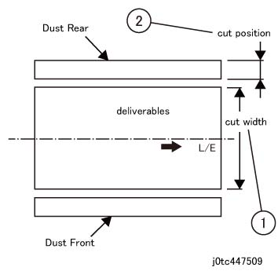

ADJ 47.25.1 裁切器 组件 裁切位置 调整 
目的
Ensure 纸张 is fed properly by adjusting the 位置 of 裁切器 组件.
[检查]
Specify a cut of 16 mm on A3 P 纸张, 和 送纸 1 纸张 of 纸张. (P 纸张 recommended)
测量 cut 宽度 的 deliverable 和 前面 边缘 的 Dust 后面 cut 位置.
测量 前面 边缘 的 deliverable. [目标值: 265mm +/- 0.5mm]
测量 前面 边缘 的 Dust 后面. [目标值: 16mm +/- 1mm]
执行 调整 当...时 目标值 不是 obtained.

拆卸 Dust 后面 从 the Waste Container.
测量 应 已执行 在...之内 30 seconds 在...之后 纸张 is fed.

(图 1) tc447509
调整
Cut 位置 调整
调整 链条连接 506-052 (CIS SNR 安装 位置 调整) 按照 the cut 位置.
调整 to 16mm +/- 1mm.
Increase in 调整 值: Cut 位置 becomes larger, Decrease in 调整 值: Cut 位置 becomes smaller [0.04 mm/Adjustment 值 1]
Cut 宽度 调整
调整 链条连接 506-051 (出 CUTTER 安装 位置 调整) 按照 the cut 宽度.
调整 to 265mm +/- 0.5mm.
Increase in 调整 值: Cut 宽度 becomes smaller, Decrease in 调整 值: Cut 宽度 becomes larger [0.04 mm/Adjustment 值 1]
Specify a 16 mm cut on A3 P 纸张 和 送纸 1 纸张 of 纸张 在...之后 调整 to 检查 adjusted cut 位置 和 cut 宽度 直到 指定值 is obtained.